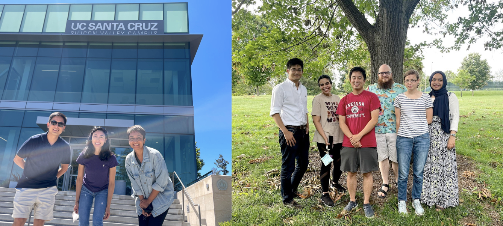

Graduate Researcher, AUX Lab, UC Santa Cruz
The Authentic User Experience Lab (AUX Lab) is part of the Baskin School of Engineering at UC Santa Cruz. People working in the lab integrate empirical and humanistic methods to do research with subcultures. We do research in human-computer interaction (HCI) and publish in related venues (e.g., CHI, DIS, CSCW, ECSCW, ICWSM). I have been working as a Graduate Student Researcher in the AUX Lab at University of California, Santa Cruz since May, 2022. I get guidance from lab director, Dr. Norman Su, and we are currently exploring experiences of people living in rural areas of California. We are currently interviewing people to find out about the problems faced by people living in rural areas, as well as find out motivations and values associated with rural living that prompt some people to move to rural areas for a living. We intend on designing an artifact that captures the gaps in existing rural infrastructures like transporation and computing, and retains rural values. Through the use of such an artifact by people living in rural areas, we intend to initite a conversation about the ideal state of rural infrastructure in the future. authentic.soe.ucsc.edu